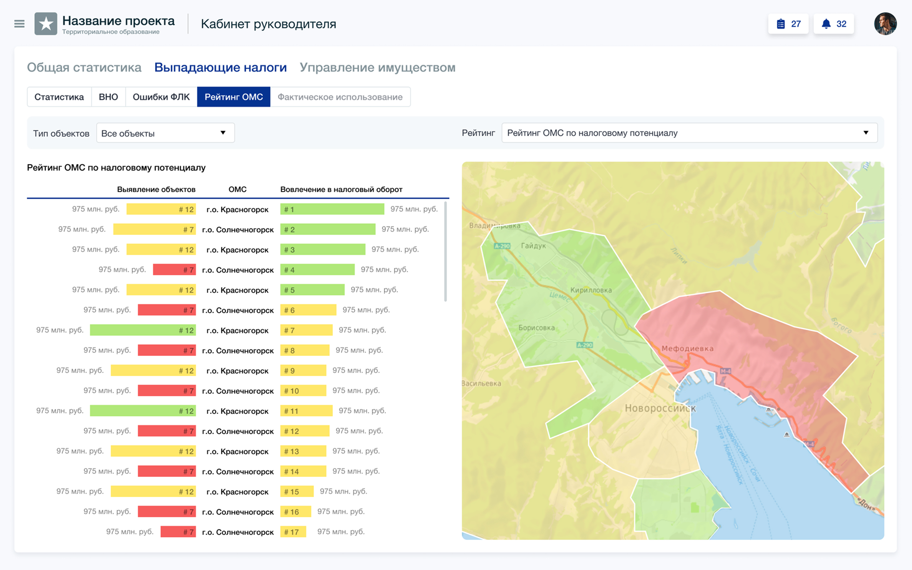
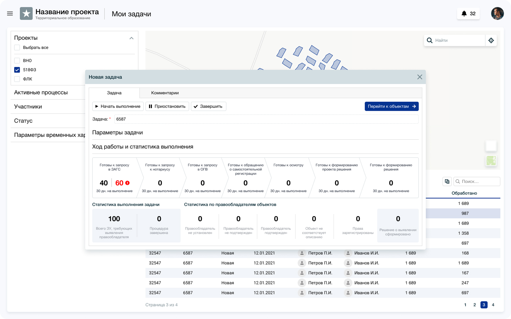
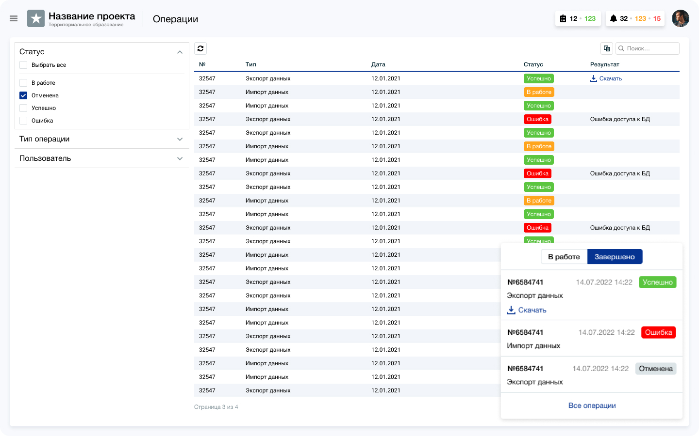
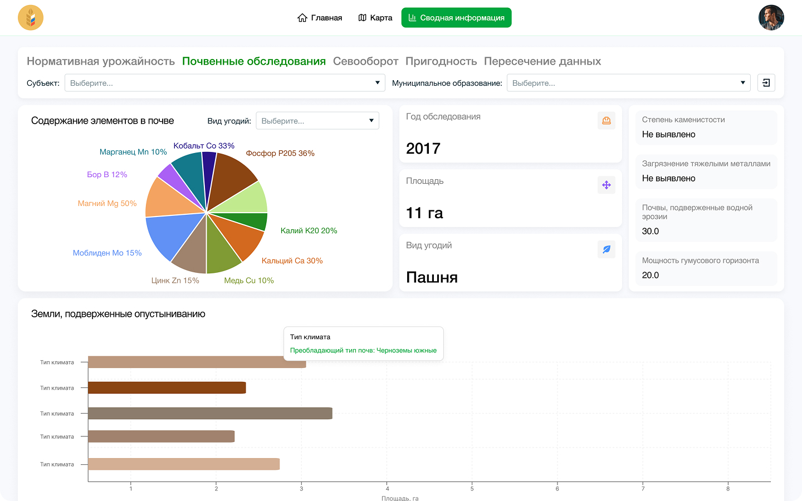
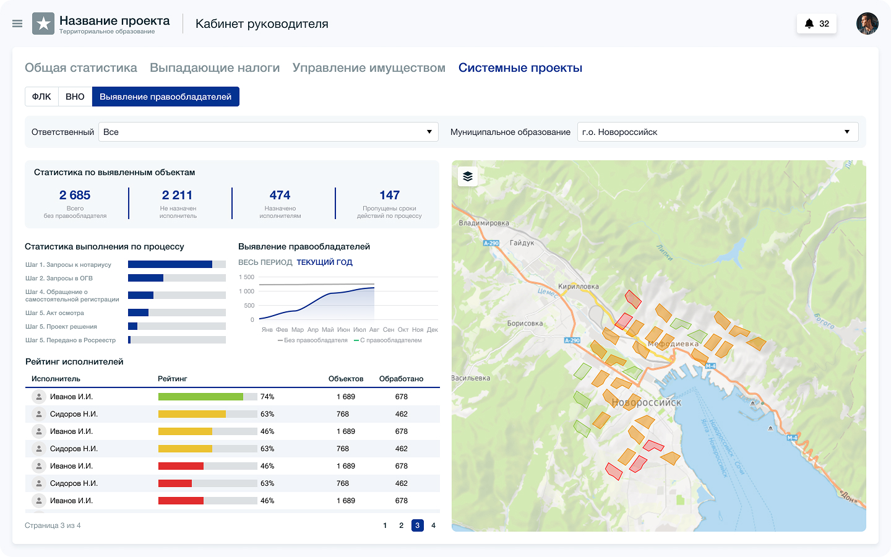
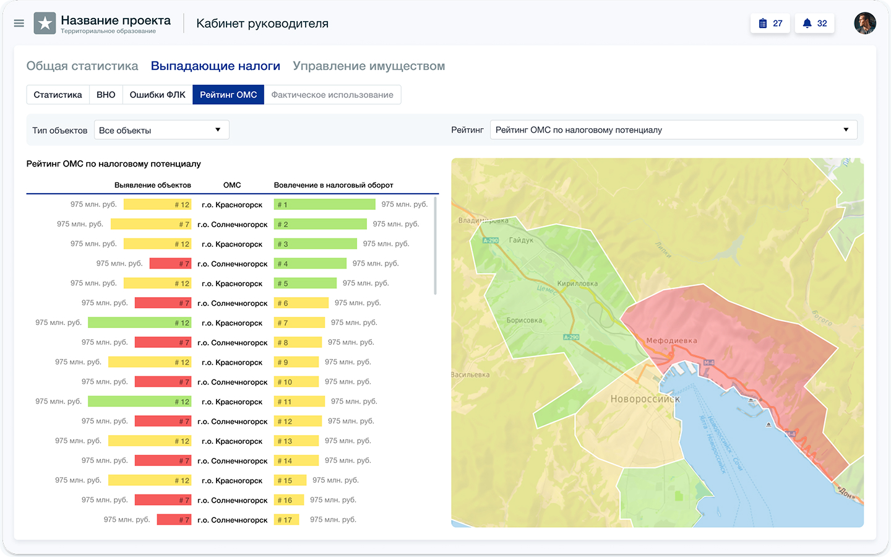
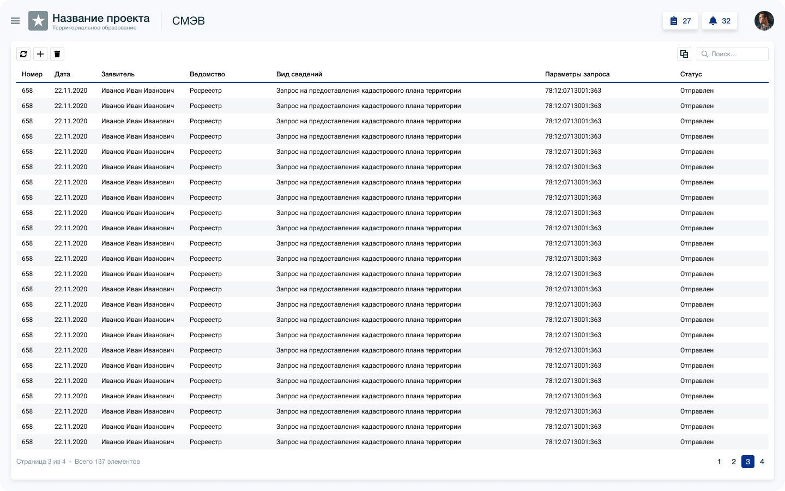

Вернуться к продуктам
Реестр отечественного ПО, запись № 34269 от 04.07.2026
Б5Аналитика
Б5Аналитика — программное обеспечение для анализа и визуализации данных и формирования интерактивных аналитических отчётов в режиме реального времени. Расчётные задачи встраиваются в систему без изменения кода: методика подключается настройкой, и система начинает считать по ней — переписывать платформу и ждать релиза не нужно.
Функциональные возможности
Б5Аналитика превращает массивы разнородных данных — атрибутивных, нормативно-справочных, статистических и других — в понятную основу для управленческих решений.

Методики
Расчётные задачи
Заводите расчётные задачи по мере того, как они появляются в работе: изменился норматив, добавилось направление, понадобился показатель, которого раньше не считали. Система расширяется под ваши задачи — а не вы подстраиваете работу под то, что заложили при внедрении.Добавляйте новые методики и показатели без переделки платформы.

Нормативы
Нормативно-справочная база
Держите все данные для расчётов в одном месте: нормативные документы, параметры объектов, отраслевые справочники. Правьте норматив один раз — изменение само применится ко всем расчётам, которые на него опираются.Обновите норматив один раз — он применится ко всем связанным расчётам.

Расчёт
Автоматизированный расчёт
Запускайте расчёт по выбранной методике — система пройдёт весь цикл сама, по нормативным требованиям и без ручного ввода на каждом шаге. Загрузили новые данные или поправили существующие — показатели пересчитаются автоматически, перепроверять формулы не нужно.Считайте по методике автоматически и пересчитывайте при обновлении данных.

Настройка
Конструктор панелей
Собирайте панель отчётов под свою задачу прямо в интерфейсе: выбираете, какой показатель вывести и в каком разрезе, система строит диаграмму или таблицу. Понадобился новый срез к совещанию — сделаете его сами, не заводя задачу на разработку.Собирайте диаграммы и таблицы в интерфейсе без помощи разработчика.

Карта
Данные на карте
Работайте с картой как с любым другим компонентом дашборда — наравне с диаграммой и таблицей. Показатели связываются с ГИС-слоем, и каждый объект получает своё значение: чем оно больше, тем крупнее объект на карте. Распределение по объектам видно сразу, без чтения столбца цифр. Геоданные обновились — карта перестроится сама.Смотрите распределение показателей на карте, которая обновляется вместе с данными.

Результат
Визуализация и экспорт
Читайте результат по цвету: значения в таблице подсвечиваются по заданным порогам, и видно, где показатель вышел за норму. Открывайте карточку объекта с его итогами, собирайте сводные отчёты и дашборды. Выгружайте диаграммы в PNG, JPEG, PDF и SVG, таблицы — в XLSX и CSV.Оценивайте показатели по цвету и выгружайте диаграммы и таблицы.
От данных
к решению
Б5Аналитика соединяет источники и расчёты в одной модели, чтобы вместо ручной сверки получать ясный результат для решения.
Источники подключены
Базы, файлы и геоданные работают вместе без отдельного хранилища под аналитику.
Расчёт по вашей методике
Аналитическая модель следует вашим правилам, а не заставляет подстраивать работу под систему.
Без ручной сверки
Расчёты выполняются в системе вместо повторной проверки показателей в таблицах.
Результат наглядный
Диаграммы, таблицы и карта показывают выводы в удобном для задачи виде.
Основа для решения
Руководитель видит проверенный результат расчёта, на который можно опереться.
Что говорят пользователи
Б5Аналитика работает в администрациях городов и регионов, отраслевых ведомствах и корпорациях.
«Раньше значительная часть аналитики собиралась вручную, а результаты приходилось дополнительно проверять и сводить. Сейчас панель пересчитывается сама, и на совещании мы смотрим одни и те же цифры».
«Нам было важно не зависеть от разработки каждый раз, когда нужен новый разрез. Аналитик собирает панель сам, за час-два, и этого достаточно».
«Результаты стали понятны не только аналитикам. Вместо выгрузок с цифрами — панель, где видно и динамику, и структуру, и расположение объектов на карте».
Посмотрите систему на своей задаче
Возьмём одну вашу методику, подключим её на демонстрации и покажем расчёт на ваших данных — чтобы вы увидели работу на реальной задаче, а не на витринном примере.
Запросить демонстрациюСтоимость
под вашу задачу
Б5Аналитика лицензируется под задачу. Стоимость зависит от модели размещения, числа пользователей и объёма подключаемых данных, поэтому мы считаем её после короткого разговора, а не выводим среднюю цифру, которая всё равно не совпадёт с вашим случаем.
Получить расчётДокументы и полезные материалы
Полный комплект документации: описание функциональных характеристик, руководство пользователя, руководство администратора, техническое задание, программа и методика испытаний, документация API для интеграторов.
Часто задаваемые вопросы
Собрали то, что чаще всего спрашивают на первых встречах. Если нужного ответа нет — напишите, ответим предметно.
Входит ли Б5Аналитика в реестр отечественного ПО?
Да. Реестровая запись № 34269 от 04.07.2026, класс ПО 05.13. Продукт можно закупать организациям с требованием использовать отечественное программное обеспечение.
Что именно делает система?
Хранит исходные данные для расчётов и ведёт нормативно-справочную базу. Выполняет вычисления по заданным методикам в соответствии с нормативными требованиями. Показывает результат интерактивными диаграммами, таблицами, карточками объектов и дашбордами, в том числе с привязкой к карте.
Как в систему добавляется новая расчётная методика?
Подключается без изменения кода: ядро платформы не переписывается, пересборка и релиз не требуются. Поэтому срок появления новой методики — это срок настройки, а не цикл разработки с планированием, тестированием и выкладкой.
Для каких отраслей подходит система?
Ядро расчётов предметно-независимое: отрасль задаётся методиками и справочниками, а не переписыванием системы. Поэтому Б5Аналитика применима везде, где расчёт выполняется по нормативной методике.
Какие типы визуализации поддерживаются?
Столбчатые и круговые гистограммы, линейные и динамические графики, сводные и плоские таблицы, картографические окна. Все компоненты обновляются автоматически при изменении исходных данных.
Как настраивается компонент панели?
В режиме конструирования: компонент выбирается на панели, измерения и меры переносятся в поля конфигурации перетаскиванием, для мер задаётся агрегация — сумма, среднее или количество. Для диаграмм измерения идут по оси X, меры по оси Y; для таблиц измерения становятся столбцами. Настройки применяются одной кнопкой.
В каких форматах выгружаются результаты?
Диаграммы — PNG, JPEG, PDF, SVG. Таблицы — XLSX и CSV. Карты — PNG.
Как разграничивается доступ?
Права назначаются администратором отдельно на панели и отдельно на наборы данных, поэтому сотрудник видит только то, что относится к его направлению. Режим конструирования доступен аналитику, обычному пользователю — нет: случайно переделать чужую панель он не может.
Где разворачивается система?
В облаке или в инфраструктуре заказчика — архитектура совместима с обеими моделями. Компоненты поставляются в Docker-контейнерах, работают на Ubuntu Server 20.04 и выше или на Astra Linux SE. Поддерживается размещение на двух географически разделённых площадках с репликацией данных на резервную.
Что нужно, чтобы начать?
Мы разворачиваем демостенд, подключаем ваш источник данных и собираем первую панель. На первой встрече обсуждаем, какие показатели нужны, откуда берутся данные и в каком контуре разворачиваться.
Обсудим
ваш проект
Оставьте заявку — мы свяжемся с вами и предложим решение.